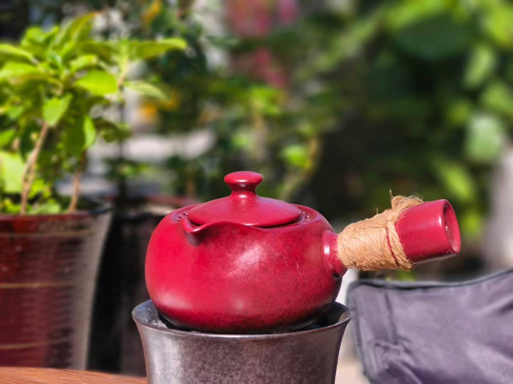
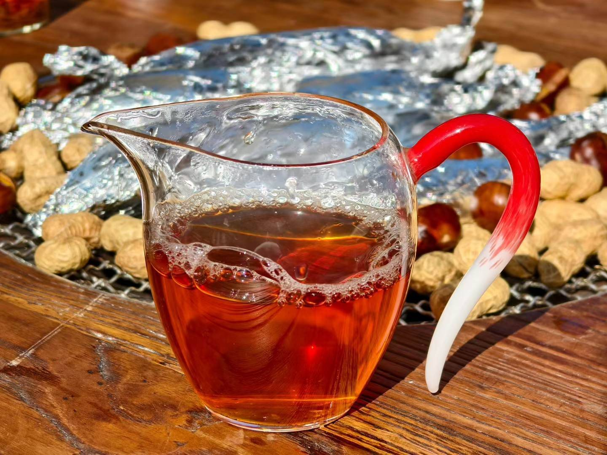
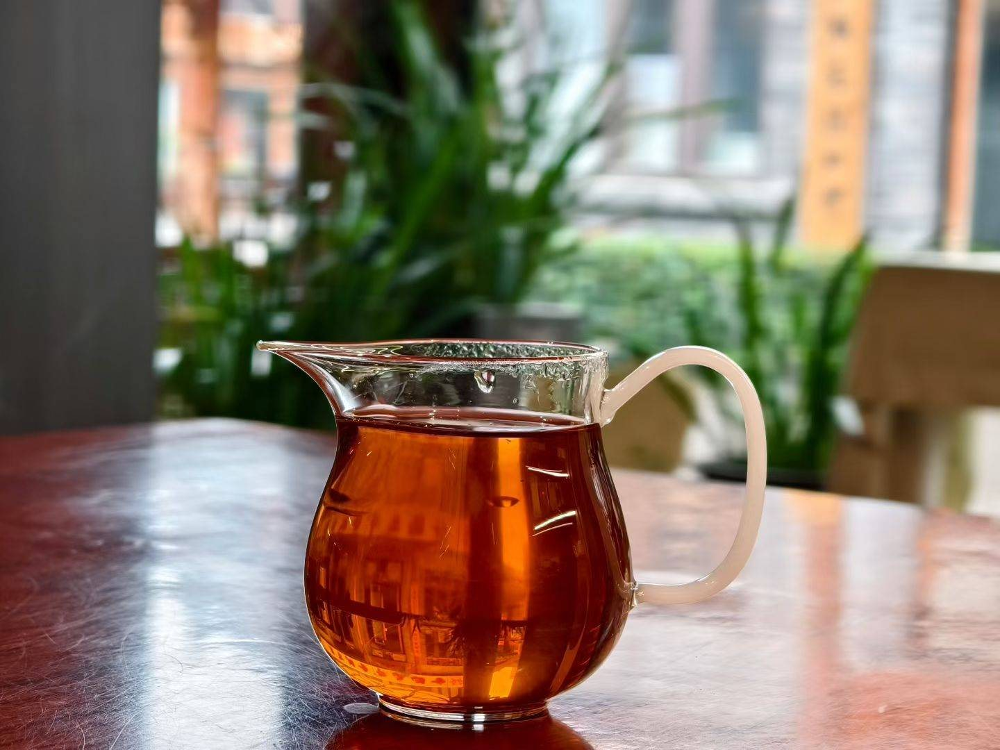
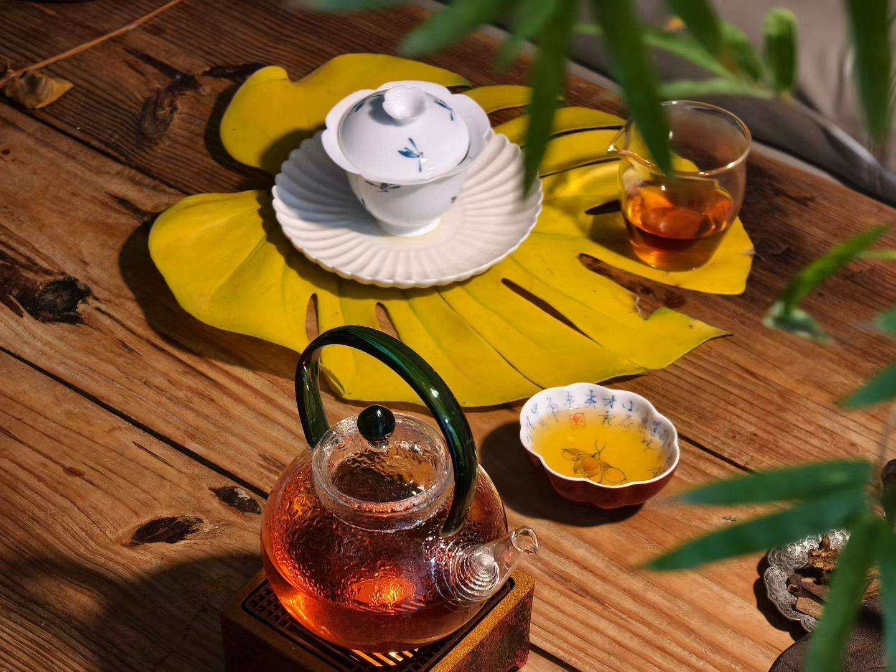
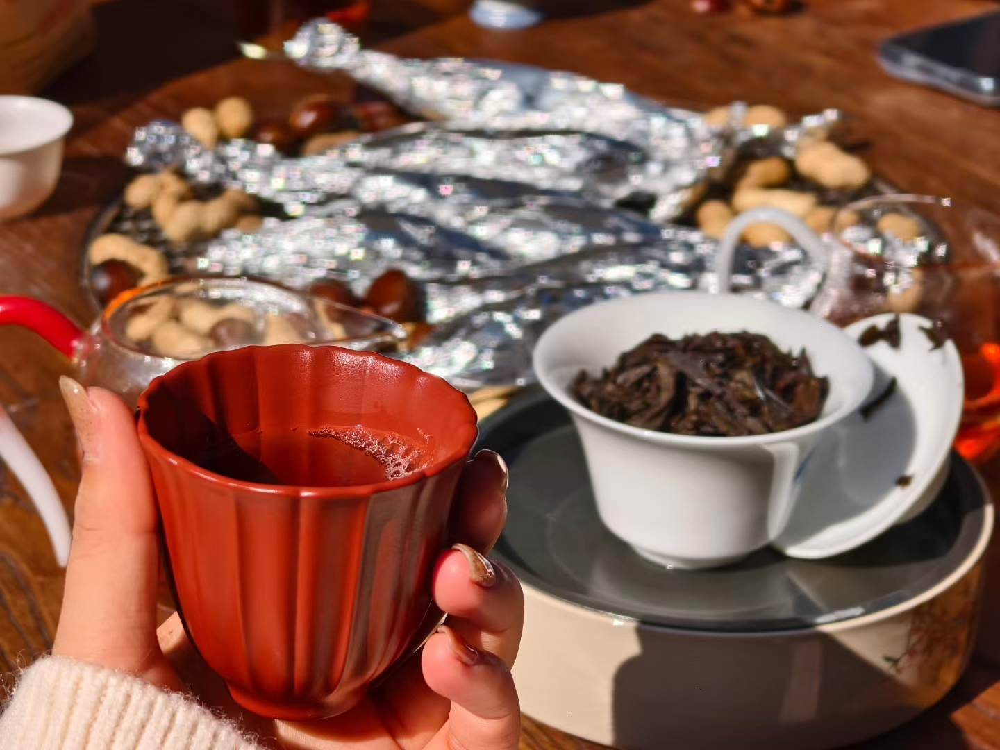

清晨开店前的第一泡
窗外的绿意还带着露水，公道杯里的茶汤亮得像琥珀。
 昕茗
昕茗
点一个节气，看看那时候我会泡什么茶。

冬
约 11 月 7 日



绿茶 · 安徽黄山 · 春
云雾养一芽，白毫似新雪。
黄山云雾多、日夜温差大，茶芽长得慢，香气也就攒得足。芽尖披着细白毫，汤色嫩绿清亮，有兰花般的清香。
怎么泡 玻璃杯或盖碗，水温约 80–85℃，看芽叶在杯里一根根立起来。
乌龙 · 武夷岩茶 · 秋
山骨入汤，花气上眉。
焙火后叶底乌润，汤色像阳光里的琥珀。先是焙火的暖，再慢慢回出花香与岩韵，配烤栗子刚刚好。
怎么泡 盖碗、沸水、快出汤，前几泡别闷，留给后面的回甘。

黑茶 · 广西梧州 · 冬
一年茶，三年药，七年宝。
越放越有味道的黑茶。陈放之后汤色红浓，带槟榔香与木香，冬天煮一壶，暖胃也暖心。
怎么泡 沸水快出汤；天冷时用小壶小火慢煮，滋味更醇。
红茶 · 四季皆宜
日色落杯中，暖意上心头。
红茶的汤色像午后的阳光，甜润好入口，第一次喝茶的朋友我最常泡给他。天冷暖手，天热放凉了也好喝。
怎么泡 盖碗或小壶，水温约 90℃，出汤别太慢，留住那一口甜。
每天泡了什么茶、遇到什么人，都记在这本小手帐里。
立冬 · 晴 · 微风
清晨开店前的第一泡
窗外的绿意还带着露水，公道杯里的茶汤亮得像琥珀。


午后陈年六堡茶
天气转凉，拿出红色小壶慢慢煮，汤色红得像晚霞，槟榔香一阵阵飘出来。

傍晚围炉烤栗子
花生、栗子包在锡箔里，茶一泡接一泡，聊到天都黑了。

—— 昕茗
寒夜客来茶当酒，竹炉汤沸火初红。
宋・杜耒〈寒夜〉戏作小诗君勿笑，从来佳茗似佳人。
宋・苏轼一碗喉吻润，两碗破孤闷。
唐・卢仝〈走笔谢孟谏议寄新茶〉坐酌泠泠水，看煎瑟瑟尘。
唐・白居易〈山泉煎茶有怀〉茶者，南方之嘉木也。
唐・陆羽《茶经》
有空来坐坐，
茶我泡，故事你带来。
想来喝杯茶，或想问问送礼怎么挑，欢迎私讯昕茗。